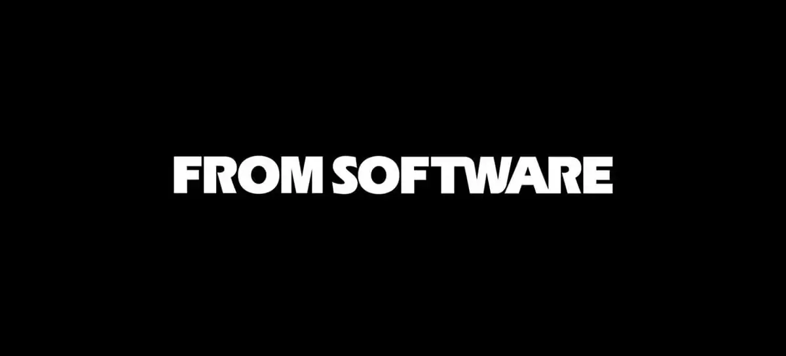

"Soulslike é dificíl"
A FromSoftware ficou mundialmente conhecida por popularizar o gênero "Souls-like" através de jogos como Dark Souls, que se destacam pela alta dificuldade, combates punitivos e chefes desafiadores, cultivando uma comunidade de jogadores que apreciam superar obstáculos árduos e consolidando a reputação do estúdio por criar experiências intensas e gratificantes.
Jogos
- Demon's Souls - 5 de fevereiro de 2009
- Dark Souls - 22 de setembro de 2011
- Dark Souls II - 11 de março de 2014
- Bloodborne - 24 de março de 2015
- Dark Souls III - 24 de março de 2016
- Sekiro: Shadows Die Twice - 22 de março de 2019
- Demon's Souls (Remake) - 12 de novembro de 2020
- Elden Ring - 25 de fevereiro de 2022
Wiki Fromsoftware
>